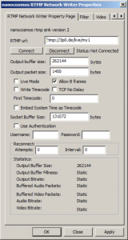

nanostream/windows/windows_networkwriter
RTMP Network Renderer & Writer
Purpose
Writing RTMP compatible video/audio streams over a network connection
- DirectShow filter for streaming to Wowza and Flash Media Servers
- Supported Architectures: Microsoft DirectShow, Windows XP, Vista, 7, Server
- Supported Formats: H.264 + AAC
Module / Version
nanocosmos RTMP Network Writer nRtmpRenderer.ax Version 3.0.3.1
DirectShow Connectivity
The RTMP Writer is implemented as a “Renderer Filter”, which means it only has 2 input pins for compressed video and audio and no output pin. The input is accepting connections matching the following media types:
- Pin 1 Media Types:
- MEDIATYPE_Video - Pin 1 Media Subtypes: - FourCCs: H264, h264
- Pin 1 Formats:
- FORMAT_MPEG2_VIDEO,
- FORMAT_NONE
- Pin 2 Major Media Types:
- MEDIATYPE_Audio
- Pin 2 Media Subtypes:
- MEDIASUBTYPE_AAC, FourCC: 0x000000FF
- Pin 2 Formats:
- FORMAT_WaveFormatEx,
- FORMAT_NONE

The filter's property page offers a subset of encoding parameters, containing the most important options.
URL formatting:
rtmp: [hostname / IP address]/[application]+[stream name] for example:
rtmp:127.0.0.1/live+myStream
with:
IP address: 127.0.0.1
Application name: live, Stream name: myStream
Connection Test
Connect/Disconnect buttons. Allows to connect before starting the graph and disconnect during the streaming (this stops the running graph).
RTMP Authentication
RTMP Authentication expects a user name and a password for unlocking access to the Media Server. This has been verified with Flash Media Server (3.x and 4) and Wowza Media Server (2.x). CDNs are supported on a case-by-case basis. Special tuning as been made for some CDN access (e.g. Limelight).
Automatic Reconnection:
Attempts to restore network connection after n seconds to the server in case of network interrupts. During the reconnect attempts the graph still playing. 0 means no attempts to reconnect to server.
Advanced Configuration Options
The advanced options should be handled carefully. They can severely affect network and streaming performance. Contact support if you want to fine tune any settings. Buffering: Data Flow: RTMP multiplexed data → application buffer → socket buffer → network. There are 2 buffer types:
- Socket level buffer: Size of the network socket buffer, much dependent on the underlying network architecture
- Application level buffer (Output Buffer Size, Output packet size), 0=no buffer Affects bandwidth utilization, prevents bitrate changes and puts the sending process to a separate thread.
Advanced Settings
- Live Mode: Turns on/off blocking of input pins. (should be off by default)
- TCP No Delay: Activates the TCP_NODELAY option for TCP transmission ("Nagle Algorithm")
- Timecode Options: Sends Time Code in RTMP Meta Data
- Allow B Frames: should be on, it reduces the buffer/delay in H.264 Main Profile without B Frames. No effect in Baseline Mode.
- Timecode Options: send Time Code in RTMP Meta Data
Connection Status Notification
There are two possibilities to get the status of the connection to the server:
- Event messages are sent via IMediaEventSink with the event code EC_NANO_RTMP_WRITER_STATUS declared in RTMPWriterOptions.h (#define EC_NANO_RTMP_WRITER_STATUS EC_USER+181). A message is sent when the connection state changes. The different states are represented by (also declared in RTMPWriterOptions.h):
- RTMPWriterConnected=0
- RTMPWriterDisconnected=1
- RTMPWriterReconnecting=2
- Using a callback function, which is called when the connection state changes:
- Query for the interface IRTMPStatusNotify
- Set the callback function via SetStatusNotifyHandler()
Rtmp Writer Filter crashes when using SetStatusNotifyHandler()
This problem is probably caused by calling a function declared with one calling convention with a function pointer declared with a different calling convention. Here is a good explanation of the problem: Visual Studio Runtime Error Run Time Check Failure
Conclusion: Make sure you use stdcall in your declaration
Log / Debug Configuration Registry Settings
Key: HKEYCURRENTUSER\Software\DebugNano\ nRtmpRenderer.ax
File name
Sets the output file name. The folder must exist. Value name: LogToFile Value type: REG_SZ / String Valid values: a valid output file name to enable file logging or an empty string
Logging level
- A higher value increases the amount of logging messages sent, and messages get more detailed.
- Value name: TRACE
- Value type: REG_DWORD
- Valid values: 0 (minimal logging) - 9 (maximal logging)